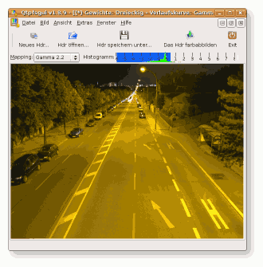
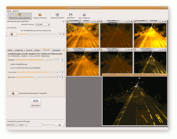
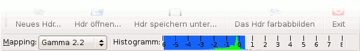

Luminance HDR
Dieser Artikel wurde für die folgenden Ubuntu-Versionen getestet:
Ubuntu 16.04 Xenial Xerus
Zum Verständnis dieses Artikels sind folgende Seiten hilfreich:
Luminance HDR  (früher Qtpfsgui) ist ein Programm, das eine einfache, grafische Oberfläche zur Erstellung und Bearbeitung von HDR-Bildern bietet. Der Quellcode wird unter der GPL entwickelt, und das Programm steht ebenfalls für Windows und Mac OS X zur Verfügung.
(früher Qtpfsgui) ist ein Programm, das eine einfache, grafische Oberfläche zur Erstellung und Bearbeitung von HDR-Bildern bietet. Der Quellcode wird unter der GPL entwickelt, und das Programm steht ebenfalls für Windows und Mac OS X zur Verfügung.
Luminance HDR findet sein Gegenstück unter Microsoft Windows und Mac OS X z.B. im kommerziellen Photomatix Pro  . HDR-Imaging jedoch auch mit GIMP möglich: Entweder mit ein wenig Handarbeit oder dem passenden Plugin exposure-blend . Das Programm MacroFusion ist eine weitere Alternative.
. HDR-Imaging jedoch auch mit GIMP möglich: Entweder mit ein wenig Handarbeit oder dem passenden Plugin exposure-blend . Das Programm MacroFusion ist eine weitere Alternative.
Installation¶
Luminance HDR befindet sich in den offiziellen Paketquellen und kann über folgendes Paket installiert [1] werden:
luminance-hdr (universe)
 mit apturl
mit apturl
Paketliste zum Kopieren:
sudo apt-get install luminance-hdr
sudo aptitude install luminance-hdr
Fremdpaket¶
GetDeb stellt Fremdpakete zur Verfügung.
Hinweis!
Fremdpakete können das System gefährden.
Benutzung¶
  Luminance HDR ist ein einsteigerfreundliches Programm zum Erstellen und Bearbeiten von HDR-Aufnahmen. Dennoch lässt sich das Programm nicht ohne ein gewisses Vorwissen bedienen. Man sollte sich also zumindest mit dem Prinzip dieser Technik auseinandergesetzt haben:High Dynamic Range Image.
HDR-Erstellung¶
Voraussetzung sind mehrere stativgestützte Aufnahmen (ca. 3-5) des gleichen (in der Praxis meist: desselben) Motivs in guter Qualität bei unterschiedlichen Belichtungszeiten. Idealerweise benutzt man eine Digitalkamera, die Belichtungsreihen (AEB) unterstützt. Unterschiedliche Blendeneinstellungen führen zu unterschiedlichen Tiefenschärfen, weshalb möglichst eine feste Blende gewählt werden sollte.
Die Bilder müssen nun in Luminance HDR importiert werden. "Neues HDR..." : Jetzt erst hat man die oben gezeigte Ansicht.
Hier hat man nun die Möglichkeit, ein paar oberflächliche Einstellungen an Gamma und Histogramm vorzunehmen. 
Bevor man nun in die Tiefen des Programms vordringt, kann man erst noch das Produkt der multiplen Aufnahmen als HDR abspeichern: "Hdr speichern unter..." . Hierfür stehen mehrere Formate zur Verfügung: EXR, PIC, TIFF, TIF und PFS.
Ausgehend von dem gerade erstellten HDR lässt sich nun das Bild farbabbilden (engl. tone mapping): "Das Hdr farbabbilden" .
Zuletzt kann man die Änderungen speichern oder wieder verwerfen.
Problembehebung¶
Bilder werden im Öffnen-Dialog nicht gefunden¶
Luminance HDR kann (unter Linux) nur Bilder verarbeiten, deren Erweiterung in Kleinbuchstaben geschrieben ist, also statt test.JPG muss es test.jpg heißen. Für die grafische Umbenennung mehrerer Dateien bieten sich verschiedene Programme an.
64-Bit¶
Unter Ubuntu 16.04 64-Bit tritt folgender Fehler auf:
"luminance-hdr: error while loading shared libraries: libraw_r.so.2: cannot open shared object file: No such file or directory"
Abhilfe schafft der folgende Befehl:
sudo ln -s /usr/lib/x86_64-linux-gnu/libraw_r.so.9 /usr/lib/x86_64-linux-gnu/libraw_r.so.2
- Erstellt mit Inyoka
-
 2004 – 2017 ubuntuusers.de • Einige Rechte vorbehalten
2004 – 2017 ubuntuusers.de • Einige Rechte vorbehalten
Lizenz • Kontakt • Datenschutz • Impressum • Serverstatus -
Serverhousing gespendet von